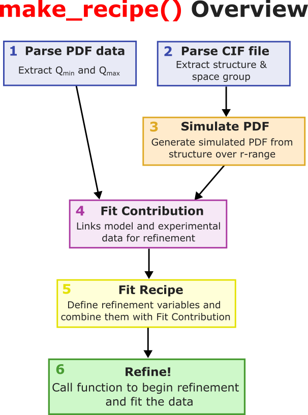

pdf
To copy an example to your current working directory, use the command cmi copy <example-name>.
Available Examples
ch03NiModelling
ch05Fit2Phase
ch06RefineCrystalStructureGen
ch07StructuralPhaseTransitions
ch08NPRefinement
ch11ClusterXYZ
Ni PDF Fitting Tutorial
The atomic pair distribution function (PDF) provides a powerful route to understanding the local atomic structure of materials in real space. Despite its utility, PDF fitting and analysis can be challenging. The process of understand PDFs requires time, care, and the development of intuition to connect structural models to experimental data. Hopefully by the end of this tutorial series, PDF fitting will go from being a mysterious black box to a powerful tool in your structural analysis.
Example usage of diffpy.cmi can be found at this GitHub repo.
Structural parameters
Before we start fitting PDFs, lets first understand the parameters that will be refined on and what they mean. It is important to understand these parameters as they will help you gain better insight into the fitting process and how to interpret the results.
PDF Parameter |
Description |
Refineable? |
Structural or Instrumental? |
|---|---|---|---|
|
Lattice parameters of the crystal structure. |
Yes |
Structural |
|
Angles between lattice vectors |
Yes |
Structural |
|
Constant (r-independent) peak broadening parameter accounting for uniform broadening of PDF peaks due to static disorder or residual instrumental effects. |
Yes |
Both |
|
Correlated motion parameter accounting for r-dependent broadening (increases with r) of PDF peaks due to correlated atomic motion. |
Yes |
Structural |
|
Isotropic atomic displacement parameter (ADP); models thermal vibration/disorder for each atom type. (note: |
Yes |
Structural |
|
Anisotropic ADPs constrained by space group symmetry. |
Yes |
Structural |
|
Correction factor for background or density mismatch. |
Sometimes; often fixed |
Instrumental |
|
Ratio of coherent to incoherent scattering, used in some models. |
Sometimes |
Instrumental |
Dataset parameters
PDF Parameter |
Description |
Refineable? |
Structural or Instrumental? |
|---|---|---|---|
|
Overall scaling factor between calculated and observed PDFs; sets the absolute intensity. |
Yes |
Instrumental |
|
Damping of PDF peaks due to limited experimental Q-range. Typically affects high-r ripples and overall peak amplitudes. |
Yes |
Instrumental |
|
Instrumental or sample-related broadening of PDF peaks. This is due to the fact that diffraction peaks have different widths as a function of Q. |
Yes |
Instrumental |
|
Minimum Q included in the fit; sets the lower bound of the fourier transform (converting S(Q) to G(r)). |
No, from experiment/setup |
Instrumental |
|
Maximum Q included in the fit; sets the upper bound of the fourier transform (converting S(Q) to G(r)). |
No, from experiment/setup |
Instrumental |
|
Minimum r (distance) included in the fit; sets the lower bound of the fitting range. |
No, from experiment/setup |
Instrumental |
|
Maximum r (distance) included in the fit; sets the upper bound of the fitting range. |
No, from experiment/setup |
Instrumental (unless fitting to nanoparticles) |
Bulk Ni PDF fitting
Although it is easier (and recommended) to fit PDFs of bulk homogeneous materials in PDFgui,
fitting a bulk PDF in diffpy.cmi will provide you with a deeper insight into the fitting process. Additionally, this pedagogical
example will help you build up confidence in using diffpy.cmi.
For bulk PDFs, we highly recommend using PDFgui. PDFgui is a great stepping stone before using diffpy.cmi.
If you don’t know how to use PDFgui, please see this
PDFgui tutorial
to fit the same Ni PDF with PDFgui.
Data Download
To download the data and scripts for this fit, type in your command line,
cmi copy ch03NiModelling
This will copy the example directory ch03NiModelling to your current working directory.
Within this directory exists data for this exercise and a script to fit the bulk Ni PDF.
Below walks you through the code in the script step-by-step.
To start, we must first import all necessary modules and packages.
import matplotlib.pyplot as plt import numpy as np from diffpy.utils.parsers.loaddata import loadData from diffpy.structure import loadStructure from diffpy.srfit.fitbase import FitContribution, FitRecipe from diffpy.srfit.fitbase import Profile from diffpy.srfit.pdf import PDFParser, PDFGenerator from diffpy.structure.parsers import getParser from diffpy.srfit.structure import constrainAsSpaceGroup
As a sanity check, lets load the cif and PDF data to see what they look like.
stru_path = "~/path/to/data/Ni.cif" data_path = "~/path/to/data/Ni.gr" # Load the structure and PDF data structure = loadStructure(stru_path) pdf_data = loadData(data_path) print("Ni cif file:") print(structure) r = pdf_data[:, 0] g = pdf_data[:, 1] plt.plot(r, g, label="PDF Data") plt.xlabel("r (Angstrom)") plt.ylabel("G(r)") plt.title("Ni PDF Data") plt.legend() plt.show()
Once you see the data and have a feel for it, we can begin the fitting process. We will first define the Dataset parameters and Structural parameters. These values will be used to initialize our fit. Given this data, these values are reasonable starting points.
PDF_RMIN = 1.5 PDF_RMAX = 50 PDF_RSTEP = 0.01 QMAX = 25 QMIN = 0.1 CUBICLAT_I = 3.52 SCALE_I = 0.4 UISO_I = 0.005 DELTA2_I = 2 QDAMP_I = 0.04 QBROAD_I = 0.02
Now, we will define a function called
make_recipe. This function will essentially tell the fit what to do. It contains all the necessary parameters and contributions for the PDF fitting process. Because looking at a function with a lot of code is scary, here is a gist of what the function does.Parses PDF data: Given the PDF data file it extracts the Q_min and Q_max values.
Parses cif file: Given the cif file it extracts the structure and space group information.
Simulates a PDF: Given the structure, it computes a simulated PDF over predefined r-range.
Creates a Fit Contribution: This will hold the simulated PDF and the experimental PDF.
Creates a Fit Recipe: This is the main recipe that combines all contributions and parameters for the fit.
Refines params based on Fit Recipe: When the function is called, the parameters defined in the fit recipe are refined to best fit the data.
def make_recipe(cif_path, dat_path): # 1. Get structural info p_cif = getParser('cif') # Get the parser for CIF files stru = p_cif.parseFile(cif_path) # Using the parser, load the structure from the CIF sg = p_cif.spacegroup.short_name # Get the space group to constrain the fit later on # 2. Get PDF data profile = Profile() # Create a Profile object to hold PDF data and metadata parser = PDFParser() # Create a PDFParser to get the appropriate Q_min and Q_max parser.parseFile(dat_path) # Parse the PDF data file profile.loadParsedData(parser) # Load the parsed PDF data into the profile profile.setCalculationRange( xmin=PDF_RMIN, xmax=PDF_RMAX, dx=PDF_RSTEP ) # Set the calculation range for the PDF fit # 3. Create a PDFGenerator to generate a simulated PDF from the structure genpdf = PDFGenerator("generatedPDF") # Give the generator a name genpdf.setStructure(stru, periodic=True) # Give the generator the structure # 4. Create a Fit Contribution object contribution = FitContribution("niPDFfit") # Give the contribution a name contribution.addProfileGenerator(genpdf) # Add the PDFGenerator to the contribution # 5. Add the Profile to the contribution contribution.setProfile(profile, xname="r") # Add the Profile to the contribution # 6. Set the equation used to combine the simulated PDF with the experimental PDF contribution.setEquation("s1*generatedPDF") # scaling factor for the simulated PDF # 7. Create a Fit Recipe which turns our physics model into a mathematical recipe recipe = FitRecipe() recipe.addContribution(contribution) # Add the contribution to the recipe # 8. Initialize the experimental parameters recipe.niPDFfit.generatedPDF.qdamp.value = QDAMP_I recipe.niPDFfit.generatedPDF.qbroad.value = QBROAD_I recipe.niPDFfit.generatedPDF.setQmin(QMIN) recipe.niPDFfit.generatedPDF.setQmax(QMAX) # 9. Add scaling factor to the recipe recipe.addVar(contribution.s1, value=SCALE_I, tag="scale") # 10. Add structural params to recipe, constraining them to the space group spacegroupparams = constrainAsSpaceGroup(genpdf.phase, sg) # Extract SG constraints for par in spacegroupparams.latpars: # Iterate over constrained lattice parameters recipe.addVar(par, value=CUBICLAT_I, name="fcc_lat", tag="lat") for par in spacegroupparams.adppars: # Iterate over constrained ADPs recipe.addVar(par, value=UISO_I, fixed=False, name="fcc_ADP", tag="adp") recipe.addVar(genpdf.delta2, name="Ni_Delta2", value=DELTA2_I, tag="d2") # Add delta2 parameter for PDF peak broadening # 11. Add instrumental Qdamp and Qbroad parameters to the recipe recipe.addVar(genpdf.qdamp, fixed=False, name="Calib_Qdamp", value=QDAMP_I, tag="inst") recipe.addVar(genpdf.qbroad, fixed=False, name="Calib_Qbroad", value=QBROAD_I, tag="inst") return recipe
Now we can call
make_recipeand plot the fit, experimental, and difference curves to evaluate how well the data fit.recipe = make_recipe(cif_path, dat_path) # Call the function to create the fit recipe recipe() r = recipe.pdfcontrib.profile.x g = recipe.pdfcontrib.profile.y gcalc = recipe.pdfcontrib.profile.ycalc diffzero = -0.65 * max(g) * np.ones_like(g) # offset the difference curve diff = g - gcalc + diffzero plt.figure(figsize=(15, 6)) plt.scatter(r, g, label="Experimental PDF") plt.plot(r, gcalc, label="Fitted PDF") plt.plot(r, diff, label="Difference") plt.xlabel("r (Angstrom)") plt.ylabel("G(r)") plt.title("Ni PDF Fit") plt.legend() plt.show()
Once you run the above code, you should see a plot similar to the one below.

{kind=link}
Congratulations! You have successfully fit a bulk Ni PDF using diffpy.cmi. You are now one step closer to becoming a PDF fitting expert.